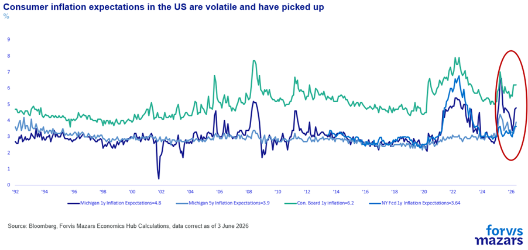
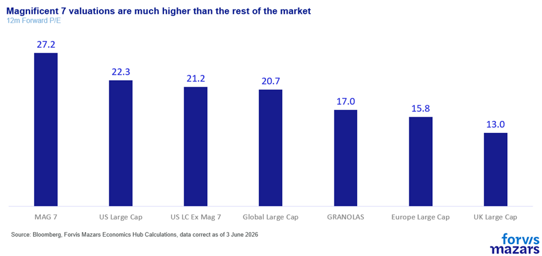

The three things investors should know about this week
Markets have shifted their attention from Hormuz to AI Mega IPOs.
By the end of the year, investors and businesses will have a lot more visibility on the workings of the world’s biggest AI companies. This is as much an opportunity as it is a risk.
Investors and businesses need to look beyond the hype and remember that the trend is structural not cyclical.
-----------------------
Summary
AI remains the dominant market narrative as mega-IPO plans from leading firms shift investor focus away from geopolitics and monetary policy. By year-end, public listings will provide greater transparency on business models, profitability, and valuations—creating both opportunity and risk. While markets can likely absorb the capital raising, elevated valuations and uncertain earnings pose challenges, alongside intensifying geopolitical competition and pricing pressures. As scrutiny increases post-IPO, sentiment may become more volatile. However,despite potential corrections, the AI transformation is structural rather than cyclical, requiring investors and businesses to look beyond hype and remain strategically committed to long-term adoption and integration.
------------------------------------
AI continues to drive the global business and market narrative. But, three and a half years after Chat GPT spoke to us, hype and reality are about to meet as AI mega-IPOs approach. We think that corrections are now more likely, but the structural theme around AI, in terms of portfolio and business investment, remains intact.
Markets are not holding their breath over Hormuz, considering the problem is solvable within the window before it becomes a wider systemic economic issue.
At the same time, they also blew past comments from the Fed’s newly installed Chair, Kevin Warsh, who said that beating inflation is not just about hitting the 2% target, but about removing it from public concern altogether. The comment itself was cryptic. It could mean that he would be willing to discuss moving the (arbitrary) average inflation threshold from 2% to possibly 2.5% or 3%, in which case the comment is dovish as it would bring rate cuts closer. Or it could be construed as hawkish, in the sense that what matters is when consumers will stop thinking about inflation as a key risk. In this case, consumers, who had spent decades in a low-inflation environment and have now experienced the pandemic/Ukraine flare-up and possibly another trade war/Hormuz one, could remain concerned well after the 2% threshold is reached, which would make the comment hawkish.

Why ignore the biggest geopolitical challenge since 9/11 and the new Fed Chair’s first comments? Because narrative matters, as Nobel laureates Robert Shiller and George Akerlof would argue in their “Animal Spirits (2009)” book. And the dominant narrative, in this particular era, is not about geopolitics or the Fed. It is about AI.
In the past few weeks, SpaceX and OpenAI had signalled that they would want to enter public markets. They were, however, beaten to the punch by Anthropic, which filed for a confidential IPO late last week. SpaceX, claiming a $1.77tn valuation and aiming to raise $75bn, could become the biggest IPO of all time. Anthropic, at a suggested valuation of $1.2tn, is possibly the most anticipated, as the most pure-play approach to Artificial Intelligence. OpenAI is expected to be nearly as big. Meanwhile, Alphabet announced that it will soon issue $80bn in stock. These four companies alone aim to raise roughly $280bn from financial markets in the next few months.
However, there are risks.
For one, these IPOs would draw money from other investments. This is the one we would dismiss more easily, as we think that the number is manageable. The S&P 500’s market cap alone is nearly $70tn. US large caps spend $1tn on share buybacks per annum. The market might see a movement of capital, but it would not likely be difficult to digest.
The second risk is simple fundamentals. Ambitions are big, but valuations could be hard to swallow. So far, these companies are private, and we don’t yet have solid earnings data. But what we do have surely gives pause for thought. Anthropic, for example, aims for an estimated $1.2 tn valuation. In April 2026, the company suggested that it had $30bn top-line revenue annualised (which means it took the last quarter and roughly multiplied by four). Assuming even a 56% profit margin, which Nvidia, the most profitable Magnificent 7 company, enjoys, it would still be 72x price/earnings valuation. Assuming half that margin, 26%, the average Magnificent 7 margin, the valuation would go up to 155x times annual earnings. Compared with 19x times for average US large caps, or even 36x, the average Magnificent 7 valuation, the number is very big, and would require many earnings seasons of successively beating expectations to bring it down. And the profit margins are still generous in both those cases. OpenAI has been estimated to lose $1.22 for every $1 in revenue.

The third risk is geopolitical. The AI race is not just a business one. It’s primarily geopolitical and geoeconomic. American AI companies are already backed by generous legislation in hopes of providing the US with a strategic advantage over China. However, they are not state-backed so they are entering the stock market to find more funding from private investors. Those investors would have to buy
on the hope that earnings will grow exponentially
that users will continue to pay more for US AI models
that other investors will also be buying long enough for them to crystallise their profits.
Unlike Nvidia, which has a significant technological “moat” versus most competitors, Anthropic, OpenAI and SpaceX are only some of the many companies developing AI models. China is also developing other models, like Deep Seek. And, unlike their US counterparts, it is willing to hand out code for free, in a bid to slow their competitor’s growth. Heftier AI costs to increase profitability come with risks. Already, some big companies like Microsoft and Uber cut their Anthropic licences as costs were rising. If retail users felt that prices were rising, they could take their chances with cheaper, or free, Chinese models, which aren’t necessarily inferior products.
If profitability faltered for publicly traded companies, then the impact on the AI sector, already investing trillions in data centres, would also be very visible and could reverse the dynamic that’s been keeping AI investments at the epicentre of markets and the real economy, as possibly the single biggest driver of GDP growth in the past quarter.
Other risks are also present. Capacity constraints in data centre manufacturing, driven by lack of RAM memories, environmental concerns, power grid limitations etc. There is also the issue of potential LLM failures, which is known as “Model Collapse” (Schumailov, 2024) or Model Autophagy Disorder (with the apt acronym “MAD”). Earlier LLM models could reason less well, but were trained on primary data, books, papers etc. Newer models also train on LLM data, a lot of which is lower quality.
What it means for investors
After October the present narrative driving markets since late 2022 will enter a new phase of scrutiny. We are leaving the AI “dreamland” and entering a world of real data and cold, hard cash. These companies will no longer cruise on the patience and hopes of long-term investors, governments and an infatuated press, but by retail investors, who can quickly turn the narrative around. Until Q4, we will likely be in a period where the narrative will become more prevalent, and where the White House, ahead of the midterms, will be pushing for improved equity returns and lower bond yields. Beyond October-November, the midterms and the first IPOs, those positive catalysts may be less potent.
Over the longer-term, however, investors should be reminded that the AI shift is structural, not cyclical. Much like Amazon, Microsoft, Apple and other dot coms in 2000, their valuations deflated violently. But 26 years later, these companies are still among the most valuable in the world. The companies and business plans will be tested. The AI theme, less so.
What it means for businesses
Listed AI companies seeking a quick increase in their profitability could potentially seek to focus on corporate clients, as the more “captive” audience. Retail users, paying monthly, could opt for different products if prices keep rising. Corporations have already invested too much, and could continue to pursue an AI edge. This could mean that they might be asked to bear the costs of potential “AI Inflation”. The bigger risk for businesses is to interpret a possible deflation of AI valuations (again, not certain this will happen) or a slowdown in adoption as a sign that AI was a fad. It is not. Stock markets are not, by any means, a predictive measure of business and economic success. As the AI industry is maturing, it will, very likely, face some speed bumps. Some of these could last for years. But the firm’s AI strategy should adapt, always assuming that AI will remain central to the future of operations.